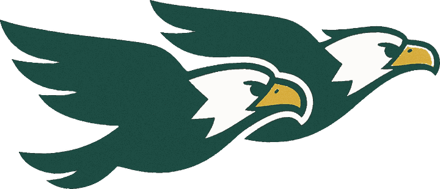

The Ashland
Eagle Chase 5K
The Game
The Faster You Type... the Faster You Run!
or press Enter
Choose your runner
How many laps?
Leaderboard
| # | Runner | Played on | Time | Typing | Errors |
|---|
The podium
- Time
- 0:00.0
- Typing
- 0 wpm
- Accuracy
- 100%
Time0:00.0
Speed0.0 mph
Typing0 wpm
Place1 of 21
StartLap 1 of 3Finish
You finished
1st
out of 21 racers
Eagle Chase 5KSat, Nov 7
Speed
Stopped
Get ready. The race starts on the beep.
Saturday, November 7 at 9:00AM · Ashland Elementary School · Walkers are welcome!